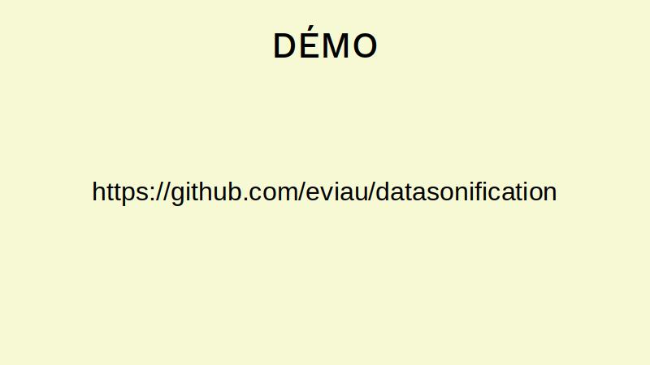

En 2019, je vous avais présenté lors de Montréal-Python un de mes projets nommé LuminX, ici même dans les locaux de plotly. Cela fait maintenant quatre ans et je voulais vous donner une petite mise-à-jour en Python sur mes projets d'art, d'économie et de finance.
Cette photo a été prise lors d'une résidence organisée par Art souterrain à l'automne 2022. Dans le cadre du projet Créer des ponts, qui vise à rendre disponible des locaux commerciaux vacants pour des projets artistiques temporaires, j'ai pu accéder aux magnifiques locaux d'une ancienne succursale d'une banque située au 936 Sainte-Catherine est, à Montréal.
La photo a été prise par Amelia Moses et montre la porte du hall d'entrée, surmontée d'une horloge, ainsi qu'une de mes oeuvres, escarcelle, le marché aux sentiments. Ce marché prend la forme d'un échange de cartes postales.
Aujourd'hui je souhaite vous parler d'art sonore en vous présentant mon utilisation de Python et de Csound.
Je m'appelle Édith Viau et ces oeuvres ont été réalisés dans le cadre du projet finartcialist. Ce projet est une exploration du monde de l'économie, de la finance et du marché du travail en général par le biais de méthodes artistiques, notamment la sonification de données.
La présentation initiale était prévue pour le 25 septembre, mais j'avais un bon rhume ce jour-là et je souhaitais vous l'épargner.
Sur cette diapositive, on voit une photo prise par Thierry Du Bois à l'automne 2022. Cette photo montre l'intérieur des locaux de la banque où a eu lieu ma résidence avec Art souterrain.
On peut voir différents objets en lien avec ma pratique, notamment un projecteur pour faire des présentations, une table de travail, un comptoir de banque, un tableau d'idéation avec des post-its.
J'aime bien savoir à quoi m'attendre d'une présentation, donc voici mes trois points principaux à retenir. J'ai voulu ressortir des points qui viennent de ma pratique mais qui sont suffisamment généraux pour être utile à l'extérieur de ce cadre.
Le premier: connaître le vocabulaire juste souligne qu'un bon lexique facilite grandement l'apprentissage de nouveaux concepts... ainsi que les recherches sur Internet.
En second: choisir le bon outil pour la tâche nous rappelle que même s'il est techniquement possible de planter un clou avec un tournevis, ça va tout de même vraiment mieux avec un marteau.
Et le dernier: manipuler des données avec Python, c'est génial! vise à souligner le rôle de facilitateur que Python joue dans ma pratique, et à mettre de l'avant cette qualité certaine de l'écosystème Python.
Nous pouvons commencer avec un peu de contexte sur le projet finartcialist et sur moi-même.
En 2014 - il y a déjà dix ans - je termine à l'Université du Québec à Montréal un baccalauréat en mathématiques, avec des cour d'économie financière.
À l'automne, alors que je commence ma maîtrise en ingénierie financière à HEC Montréal, je visite le Musée d'art contemporain de Montréal pour voir l'exposition Les prophètes. Au coeur de cette exposition: une oeuvre monumentale composée d'une pléthore de micro-sculptures réalisées avec des matériaux du quotidien par le duo d'artistes Ibghy et Lemmens. Chaque sculpture démontre ou illustre un concept économique ou des données financières.
Cette oeuvre marque mon imaginaire et ouvre une porte: on peut parler de choses un peu aride, un peu intellectuelles, de façon très créative, et ce, sans remuer ciel et terre dans les moyens employés.
Par la suite, je continue mes études à HEC Montréal.
Un samedi soir un peu quelconque, genre un soir d'hiver sombre, je suis attablée à mon bureau pour travailler sur un devoir du cours de Simulation Monte Carlo... et je pense à comment rendre le tout plus intéressant. Quels sont les moyens à ma disposition pour mieux percer les secrets des méthodes mathématiques que j'emploi et des données utilisées par ces algorithmes ?
Je ne suis plus certaine si à ce moment, j'avais déjà entendu des oeuvres d'art sonore réalisées à base de données... je pense que oui - probablement - mais p'être pas aussi ?
Toujours est-il que je me mets rapidement à imaginer écouter les données et les algorithmes: comment sonifier les procédés de mes devoirs ?
Cette question deviendra une obsession pour moi, et formera le socle du projet finartcialist.
Donc quand je parlais du choix des outils, voici quelques-uns de mes premiers essais.
Au début, je me débrouillais pour générer des fichiers MIDI avec le programme MATLAB. C'était très limitant au point de vue de l'esthétique sonore de la création, donc j'ai continué mes recherches pour trouver des outils plus appropriés.
Au fil de mes lectures, je découvre le terme synthèse sonore. Au début de mes démarches, je n'avais pas les bons mots et cela m'a pris du temps pour me constituer un vocabulaire me permettant de m'exprimer adéquatemment.
Des fois, je cherchais des trucs tel que "comment faire musique ordinateur"...
Après MATLAB, j'ai cherché des projets en C parce que c'était le langage utilisé dans le cours de Simulation Monte Carlo. J'ai trouvé la bibliothèque libsndfile, qui a été utile pour me faire comprendre que ce que je voulais faire était en fait plutôt complexe. C'est une bibliothèque plutôt low-level et c'était fastidieux de créer avec celle-ci. Je continuai mes recherches.
De fil en aiguille, j'ai mis la main sur le projet Csound, et ce fût le coup de foudre.
Donc Csound, c'est un projet qui ressemble à du XML mélangé avec des opcodes style assembleur. L'implémentation originale est en C, d'où le nom. Et la rétrocomptabilité est assurée autant que faire se peut dans l'idée originale du projet - sur le site web, on peut lire qu'on travaille fort sur le fait qu'il soit possible en 2023 d'écouter une pièce de 1986, et qu'une pièce de 2023 devrait pouvoir être écoutée même en 2050.
Ça c'est intéressant pour les artistes car cela facilite grandement les tâches liées à l'archivage, à la conservation et à la préservation des oeuvres numériques.
Cette image montre un fichier Csound de base, avec les tags XML, les opcodes, et les données.
(Lors de la présentation, j'ai donné de longues explications reprises d'un atelier archivé dans un repo github de datasonification. Veuillez vous y référer pour l'essentiel du propos.)
Comment on sonifie des données qui ne sont pas a priori musicales ?
Voici quelques-unes des techniques utilisées:
- Associer une note spécifique à une donnée: par exemple, chaque fois que j'ai le nombre 5, je joue la note do.
- Associer une plage de données à une note: si le nombre de valeurs possibles pour les données est plus grand que le nombre de notes possibles, je peux regrouper les données et associer chaque groupe à une note. Par exemple, je peux associer les valeurs de 5 à 10 à la note do.
- Associer une ou des données à plusieures notes: pour générer une certaine musicalité, dans le cas de données plus aléatoires par exemple, je peux associer les données à un extrait d'une mélodie, remixant la pièce originale.

test
test

test
test
test